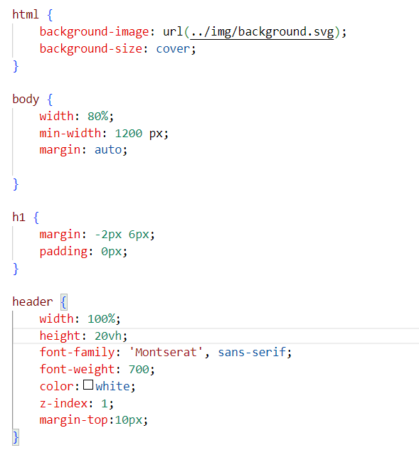
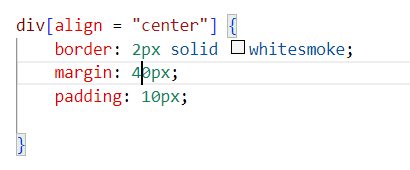
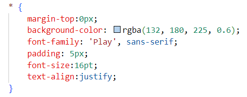
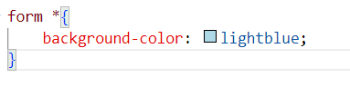

Тема: Каскадні таблиці стилів. Селектори, ідентифікатори.
Стильове оформлення текстових елементів в HTML-документах.
Мета: придбати практичні навички роботи з селекторами, ідентифікаторами,
списками, різноманітними властивостями кольору і фону, зовнішними
та внутрішними відступами, плаваючими елементами, оформленням
текстових елементів
Один із способів вказання елементу html, до якого необхідно застосувати той чи інший стиль в листі css, являється вказання назви тега Знімок нижче демонструє застосування селекторів тега. Задані властивості стилю застосовуються для усіх елементів сторінки html, які створені одноіменним тегом.
 Через селектори класу можна звертатись до елементів html-сторінки, яким, в свою чергу, можна власноруч присвоювати ім'я класу.
На знімках нижче показаний приклад з присвоїння ім'я класу в файлі html увідкриваючому тегу блоку <div class='content'>.
Наступний знімок демонструє присвоєння стильових властивостей саме вказаному.
Навіть якщо в html-документі міститься більше одного блоку <div>, ці властивості стосуватимуться лише тих тегів, які маєють атрибут class='content'.
Ідентифікатори застосовуються аналогічно селекторам класу і оголошуються як атрибут тегу, до якого необхідно застосувати стильові властивості. Ім'я ідентифікатора в html-файлі оголошується як атрибут id = 'name'. Синтаксис викристання наведено на наступних знімках.
HTML: В роботі застосовано звертання до об'єктів через дочірні селектори. Мова css дозволяє конкретизувати необхідний об'єкт з їх будь-якої
кількості в html-файлі, вказавши шлях до нього через його батьківський елемент.
В лабораторній работі широко використані дочірні селектори, які наведені на знімку нижче. Перший запис header a означає
застосування властивостей стилю тільки для тих тегів <a>, які є дочірніми блоку <header>.
Аналогічно і в другому і наступних записах. Ієрархія елементів вказується зліва направо від батьківського до дочірнього. Набір
властивостей застосовується лише для останнього об'єкта.
Ще один з варіантів звертання до необхідного об'єкту - селектори атрибутів. Дозволяють встановлювати властивості елементу, що утворений тегом, який, в свою чергу має певний атрибут.
Універсальний селектор позначається * і означає звертання до всіх елементів html-сторінки. Його синтаксис дуже простий. Знімок нижче демонструє використання універсального селектора. Такий запис означає застосування властивостей стилю до абсолютно усіх елементів сторінки.
Універсальний селектор може бути використаний в якості дочірнього. На наступному знімку властивість background-color застосовується для всіх елементів, що є дочірніми відносто форми.
 Мова css має багате різноманіття властивостей, які доступні для зміни. Ці властивості суттєво впливають на відображення компонентів
сторінки. На наведеному нижче прикладі, властивість "margin-top" відповідає за значення відступу зверху від попереднього елементу.
"Margin-top" являється відокремленною властивістю від "margin", яка відповідає за відступи з усх боків.
Властивість "padding" задає внутрішні поля, тобто відступ від меж обраного елементу до його вмісту.
Надалі для классу "content" визначено колір заднього плану, стиль та розмір шрифту, вирівнювання текстового вмісту по ширині блоку.
Клас "list" назначено елементу, що створює список на сторінці. В роботі кореневому блоку назначені властивості максимальної ширини
блоку, вирівнювання по лівому краю, та відступ ліворуч на 30 пікселів.
Надалі для усіх дочірніх <li> заданий жирний шрифт "bold".